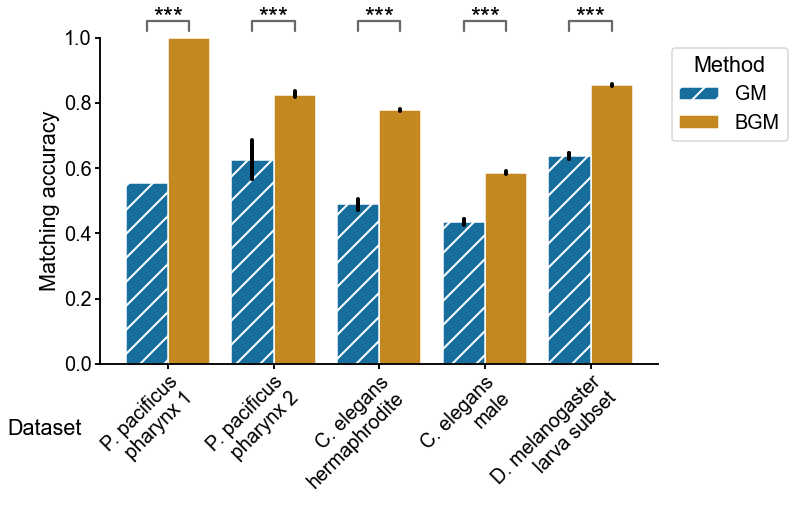

Connectome data
Contents
Connectome data¶
import datetime
import time
import matplotlib as mpl
import matplotlib.pyplot as plt
import numpy as np
import pandas as pd
import seaborn as sns
from giskard.match import GraphMatchSolver
from giskard.plot import matched_stripplot
from pkg.data import load_split_connectome
from pkg.io import OUT_PATH
from pkg.io import glue as default_glue
from pkg.io import savefig
from pkg.plot import method_palette, set_theme
from scipy.stats import wilcoxon
from tqdm import tqdm
FILENAME = "connectomes"
DISPLAY_FIGS = True
OUT_PATH = OUT_PATH / FILENAME
def glue(name, var, **kwargs):
default_glue(name, var, FILENAME, **kwargs)
def gluefig(name, fig, **kwargs):
savefig(name, foldername=FILENAME, **kwargs)
glue(name, fig, figure=True)
if not DISPLAY_FIGS:
plt.close()
t0 = time.time()
rng = np.random.default_rng(8888)
Load processed data, run matching experiment¶
def get_hemisphere_indices(nodes):
nodes = nodes.copy()
nodes["_inds"] = np.arange(len(nodes))
left_nodes = nodes[nodes["hemisphere"] == "L"]
right_nodes = nodes[nodes["hemisphere"] == "R"]
assert (left_nodes["pair"].values == right_nodes["pair"].values).all()
left_indices = left_nodes["_inds"].values
right_indices = right_nodes["_inds"].values
return left_indices, right_indices
# def compute_density
def compute_contralateral_ratio(A, B, AB, BA, agg="nonzero"):
if agg == "nonzero":
aggfunc = np.count_nonzero
elif agg == "sum":
aggfunc = np.sum
m_A = aggfunc(A)
m_B = aggfunc(B)
m_AB = aggfunc(AB)
m_BA = aggfunc(BA)
return (m_AB + m_BA) / (m_A + m_B + m_AB + m_BA)
RERUN_SIMS = True
datasets = ["maggot_subset", "male_chem", "herm_chem", "specimen_148", "specimen_107"]
n_sims = 50
glue("n_initializations", n_sims)
contra_weight_ratios = {}
results_by_dataset = {}
for dataset in datasets:
adj, nodes = load_split_connectome(dataset)
n_nodes = len(nodes)
glue(f"{dataset}_n_nodes", n_nodes, form="long")
n_edges = np.count_nonzero(adj)
glue(f"{dataset}_n_edges", n_edges, form="long")
left_inds, right_inds = get_hemisphere_indices(nodes)
A = adj[left_inds][:, left_inds]
B = adj[right_inds][:, right_inds]
AB = adj[left_inds][:, right_inds]
BA = adj[right_inds][:, left_inds]
contra_edge_ratio = compute_contralateral_ratio(A, B, AB, BA, agg="nonzero")
glue(f"{dataset}_contra_edge_ratio", contra_edge_ratio, form="2.0f%")
contra_weight_ratio = compute_contralateral_ratio(A, B, AB, BA, agg="sum")
glue(f"{dataset}_contra_weight_ratio", contra_weight_ratio, form="2.0f%")
contra_weight_ratios[dataset] = contra_weight_ratio
if RERUN_SIMS:
n_side = len(left_inds)
seeds = rng.integers(np.iinfo(np.uint32).max, size=n_sims)
rows = []
for sim, seed in enumerate(tqdm(seeds, leave=False)):
for method in ["GM", "BGM"]:
if method == "GM":
solver = GraphMatchSolver(A, B, rng=seed)
elif method == "BGM":
solver = GraphMatchSolver(A, B, AB=AB, BA=BA, rng=seed)
run_start = time.time()
solver.solve()
match_ratio = (solver.permutation_ == np.arange(n_side)).mean()
elapsed = time.time() - run_start
rows.append(
{
"match_ratio": match_ratio,
"sim": sim,
"method": method,
"seed": seed,
"elapsed": elapsed,
"converged": solver.converged,
"n_iter": solver.n_iter,
"score": solver.score_,
}
)
results = pd.DataFrame(rows)
results.to_csv(OUT_PATH / f"{dataset}_match_results.csv")
else:
results = pd.read_csv(OUT_PATH / f"{dataset}_match_results.csv", index_col=0)
results_by_dataset[dataset] = results
Plot the matching accuracy showing each random seed¶
set_theme(font_scale=1.2)
scale = 5
jitter = 0.25
meanline_width = 0.35
n_datasets = len(datasets)
order = ["GM", "BGM"]
nice_dataset_map = {
"herm_chem": "C. elegans\nhermaphrodite",
"male_chem": "C. elegans\nmale",
"maggot": "Maggot",
"maggot_subset": "D. melanogaster\n larva brain subset",
"specimen_107": "P. pacificus\npharynx 1",
"specimen_148": "P. pacificus\npharynx 2",
}
n_rows = int(np.ceil(n_datasets / 3))
n_cols = min(n_datasets, 3)
fig, axs = plt.subplots(
n_rows,
n_cols,
figsize=(n_cols * scale, n_rows * scale),
sharey=True,
constrained_layout=True,
gridspec_kw=dict(hspace=0.1),
)
pvalues = {}
acc_changes = {}
for i, (dataset, results) in enumerate(results_by_dataset.items()):
index = np.unravel_index(i, (n_rows, n_cols))
ax = axs[index]
matched_stripplot(
data=results,
x="method",
y="match_ratio",
match="sim",
order=order,
hue="method",
palette=method_palette,
ax=ax,
jitter=jitter,
legend=False,
)
ax.tick_params(which="both", length=7)
ax.set_ylabel("Match accuracy")
ax.set_xlabel("")
ax.set_title(nice_dataset_map[dataset])
ticklabels = ax.get_xticklabels()
for ticklabel in ticklabels:
method = ticklabel.get_text()
ticklabel.set_color(method_palette[method])
gm_results = results[results["method"] == "GM"]
bgm_results = results[results["method"] == "BGM"]
stat, pvalue = wilcoxon(
gm_results["match_ratio"].values,
bgm_results["match_ratio"].values,
mode="approx",
)
glue(f"{dataset}_match_ratio_pvalue", pvalue, form="pvalue")
pvalues[dataset] = pvalue
improvement = bgm_results["match_ratio"].mean() - gm_results["match_ratio"].mean()
glue(f"{dataset}_mean_accuracy_change", improvement, form="2.0f%")
acc_changes[dataset] = improvement
for i, method in enumerate(order):
mean_match_ratio = results[results["method"] == method]["match_ratio"].mean()
ax.plot(
[i - meanline_width, i + meanline_width],
[mean_match_ratio, mean_match_ratio],
color=method_palette[method],
)
ax.text(
i + meanline_width + 0.05,
mean_match_ratio,
f"{mean_match_ratio:0.2f}",
color=method_palette[method],
va="center",
ha="left",
fontsize="medium",
)
glue(f"{dataset}_{method}_mean_match_accuracy", mean_match_ratio)
ax.set_xlim((-0.5, 1.5))
ax.set_yticks([0.45, 0.6, 0.75, 0.9])
ax.yaxis.set_major_locator(plt.MaxNLocator(4))
for ax in axs.flat:
if not ax.has_data():
ax.axis("off")

datas = [contra_weight_ratios, acc_changes]
meta_results = pd.DataFrame(
datas, index=["Contralateral weight ratio", "Accuracy improvement"]
).T
meta_results
fig, ax = plt.subplots(1, 1, figsize=(6, 6))
sns.scatterplot(
data=meta_results, y="Accuracy improvement", x="Contralateral weight ratio", ax=ax
)
<AxesSubplot:xlabel='Contralateral weight ratio', ylabel='Accuracy improvement'>
Plot the matching accuracy in aggregate¶
all_results = []
for dataset, results in results_by_dataset.items():
results["dataset"] = dataset
all_results.append(results)
all_results = pd.concat(all_results)
all_results
| match_ratio | sim | method | seed | elapsed | converged | n_iter | score | dataset | |
|---|---|---|---|---|---|---|---|---|---|
| 0 | 0.706452 | 0 | GM | 200426005 | 5.998804 | False | 30 | 0 | maggot_subset |
| 1 | 0.864516 | 0 | BGM | 200426005 | 3.209209 | True | 26 | 0 | maggot_subset |
| 2 | 0.635484 | 1 | GM | 1087836691 | 4.057962 | True | 28 | 0 | maggot_subset |
| 3 | 0.848387 | 1 | BGM | 1087836691 | 1.665947 | True | 11 | 0 | maggot_subset |
| 4 | 0.653226 | 2 | GM | 2808301671 | 3.952527 | False | 30 | 0 | maggot_subset |
| ... | ... | ... | ... | ... | ... | ... | ... | ... | ... |
| 95 | 1.000000 | 47 | BGM | 3948372264 | 0.000826 | True | 3 | 0 | specimen_107 |
| 96 | 0.555556 | 48 | GM | 1655188775 | 0.001072 | True | 4 | 0 | specimen_107 |
| 97 | 1.000000 | 48 | BGM | 1655188775 | 0.000887 | True | 3 | 0 | specimen_107 |
| 98 | 0.555556 | 49 | GM | 2605143165 | 0.001101 | True | 4 | 0 | specimen_107 |
| 99 | 1.000000 | 49 | BGM | 2605143165 | 0.000904 | True | 3 | 0 | specimen_107 |
500 rows × 9 columns
mpl.rcParams["hatch.linewidth"] = 2.0
set_theme(font_scale=1.2)
# was for sorting by accuracy
# order = all_results.groupby("dataset")["match_ratio"].mean().sort_values().index
order = pd.Series(
["specimen_107", "specimen_148", "herm_chem", "male_chem", "maggot_subset"]
)
fig, ax = plt.subplots(1, 1, figsize=(10, 6))
sns.barplot(
data=all_results,
x="dataset",
order=order,
hue_order=["GM", "BGM"],
y="match_ratio",
hue="method",
ax=ax,
palette=method_palette,
edgecolor="white",
zorder=0,
errcolor=".0",
errwidth=4,
)
# hack to add hatches to only one plot
sns.barplot(
data=all_results[all_results["method"] == "GM"],
x="dataset",
order=order,
hue_order=["GM", "BGM"],
y="match_ratio",
hue="method",
ax=ax,
palette=method_palette,
hatch="/",
zorder=1,
edgecolor="white",
errcolor=".0",
errwidth=4,
)
leg = ax.get_legend()
handles, labels = ax.get_legend_handles_labels()
ax.legend(
handles=handles[1:3][::-1],
labels=labels[1:3][::-1],
title="Method",
loc="upper right",
bbox_to_anchor=(1.25, 1),
frameon=True,
)
ax.set(ylabel="Matching accuracy")
plt.setp(
ax.get_xticklabels(), rotation=45, ha="right", va="top", rotation_mode="anchor"
)
ax.tick_params(length=5)
ax.set_xticklabels(order.map(nice_dataset_map))
def draw_significance(pvalue, x, xdist, y=1.02, ydist=0.03):
if pvalue < 0.0005:
text = "***"
elif pvalue < 0.005:
text = "**"
elif pvalue < 0.05:
text = "*"
else:
text = ""
if text != "":
ax.plot(
[x - xdist, x - xdist, x + xdist, x + xdist],
[y, y + ydist, y + ydist, y],
color="dimgrey",
clip_on=False,
)
ax.text(x, y, text, ha="center", va="bottom", fontsize="large")
for i, dataset in enumerate(order):
pvalue = pvalues[dataset]
draw_significance(pvalue, i, 0.2)
ax.set_ylim((ax.get_ylim()[0], 1))
ax.set_xlabel("Dataset")
ax.xaxis.set_label_coords(-0.1, -0.17)
gluefig("match_accuracy_comparison", fig)

End¶
elapsed = time.time() - t0
delta = datetime.timedelta(seconds=elapsed)
print(f"Script took {delta}")
print(f"Completed at {datetime.datetime.now()}")
Script took 0:09:46.974921
Completed at 2022-05-16 16:09:59.992281